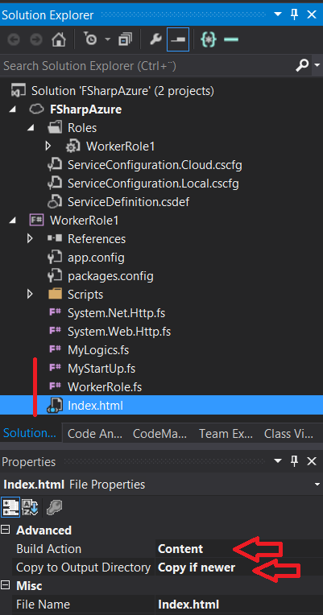
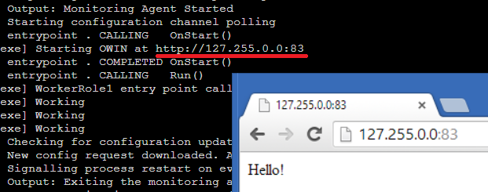

OWIN-rajapinta ja SignalR-viestitys
OWIN on rajapinta, johon voi helposti rekisteröidä komponentteja:
- WWW-tiedosto-palvelin
- REST-Web-rajapintaa
- SignalR-kommunikaatio
- Autentikointi
- Yms. (tulevaisuudessa jopa IIS)
OWIN ja SignalR vaativat käynnistyäkseen vähän infrastruktuuri-seremoniaa. Käytetään WorkerRole-projektia ja tiedostopalvelimena komponenttia Microsoft.Owin.StaticFiles.
Tekniikkavalinta
Tässä harjoituksessa on valittu tekniikaksi SignalR, jolla saavutetaan kaksisuuntainen kommunikaatio. Toinen tyypillinen tapa olisi tehdä CRUD-henkinen REST API, josta löytyy OWIN-F#-koodiesimerkki netistä.
Tässä harjoituksessa käytetään WorkerRolea ja OWIN:ia. Toinen ihan käyttökelpoinen ratkaisu olisi tehdä (C#/VB.NET) ASPNET Web Role, josta voi referoida F#-kirjasto-projektia. Silloin saisit osan IIS-infrastruktuuria kaupanpäälle, mutta kannattaisi varautua mahdollisiin taustasäieongelmiin.
Käynnistyskoodilohkon lisääminen
Valitse WorkerRole-projekti, paina sen päällä hiiren oikeaa nappia, ja valitse Add -> New Item... -> Source File, ja lisää projektille tiedosto MyStartUp.fs sisällöltään:
1: 2: 3: 4: 5: 6: 7: 8: 9: 10: 11: 12: 13: 14: 15: 16: 17: 18: 19: 20: 21: 22: 23: 24: 25: |
module MyStartUp open Owin open Microsoft.AspNet.SignalR let hubConfig = HubConfiguration(EnableDetailedErrors = true, EnableJavaScriptProxies = true) type MyWebStartup() = member x.Configuration(app:Owin.IAppBuilder) = //OWIN Component registrations here... //SignalR: app.MapSignalR(hubConfig) |> ignore //Static files server (Note: default FileSystem is current directory!) let fileServerOptions = Microsoft.Owin.StaticFiles.FileServerOptions() fileServerOptions.DefaultFilesOptions.DefaultFileNames.Add("index.html") //fileServerOptions.FileSystem <- Microsoft.Owin.FileSystems.PhysicalFileSystem(@"c:\wwwroot\") app.UseFileServer fileServerOptions |> ignore () [<assembly: Microsoft.Owin.OwinStartup(typeof<MyWebStartup>)>] do() |
Siirrä kyseinen tiedosto Solution Explorerissa WorkerRole.fs-tiedoston päälle, jotta sen suoritus tapahtuu ennen WorkerRole-tiedostoa.
Index.html
Koodissa lisätään index.html www-palvelun oletustiedostoksi. Oletuspolku palvelulle on projektin output-path. Joten lisää projektiin TextFile nimeltään index.html ja vaihda sen propertiesista "Build Action" arvoon "Content" ja "Copy to Output Folder" arvoon "Copy if newer".

Index.html tulee sisältämään jonkinlaisen sisällön ja kansan JavaScriptiä: SignalR-JavaScript-asiakaspuolen komponentit. Mutta hommaa voi testata, niin voit nyt aluksi vaan kirjottaa sinne jonkinlaisen tervehdyksen.
Konfiguraatio ja käynnistys
Deployment-projektissa on ServerDefinition.csdef-tiedosto, jossa on palvelimen asetuksia. Aluksi voit muuttaa WorkerRole-tagin attribuutin vmsize-asetuksen asennosta "Small" asentoon "ExtraSmall". WorkerRole-tagin sisässä on Imports. Kopioi Imports:in rinnalle uusi tagi Endpoints. Tiedosto näyttää jokseenkin tältä (riippuen tietysti projektisi nimestä, yms.):
<?xml version="1.0" encoding="utf-8"?>
<ServiceDefinition name="FSharpAzure"
xmlns="http://schemas.microsoft.com/ServiceHosting/2008/10/ServiceDefinition"
schemaVersion="2013-10.2.2">
<WorkerRole name="WorkerRole1" vmsize="ExtraSmall">
<Imports>
<Import moduleName="Diagnostics" />
</Imports>
<Endpoints>
<InputEndpoint name="Endpoint1" protocol="http" port="80" localPort="80" />
</Endpoints>
</WorkerRole>
</ServiceDefinition>
Seuraavaksi avaa WorkerRole.fs:n tiedosto wr.OnStart() -metodi ja kopioi ennen base.OnStart():ia tapahtumaan seuraava koodinpätkä:
1: 2: 3: 4: 5: 6: |
let endpoint = RoleEnvironment.CurrentRoleInstance.InstanceEndpoints.["Endpoint1"] let baseUri = sprintf "%s://%A" endpoint.Protocol endpoint.IPEndpoint log ("Starting OWIN at " + baseUri) "Information" let options = StartOptions() options.Urls.Add(baseUri) webApp <- WebApp.Start<MyStartUp.MyWebStartup>(options) |
Tämä hakee konfiguraation ServerDefinition-tiedostosta, tulostaa sen ruudulle, ja käynnistää palvelimen. Nyt kun käynnistät palvelimen, niin voit käydä Azuren Compute Emulator UI:n konsolista katsomassa (tähän oli ohjeet jo WorkerRole-harjoituksessa) mihin osoitteeseen palvelin käynnistyi, ja surffata siihen selaimella.

SignalR
SignalR on dynaaminen JavaScriptiin perustuva kirjasto, joka käyttää C#-dynamic-operaattoria. Tämän takia WorkerRole-projektiin on lisättävä referenssi Microsoft.CSharp. (Tuttuun tapaan, Solution Explorerissa References-kansion päällä oikeaa nappia ja: Add Reference -> Assemblies -> Framework).
Lisäksi dynamic ei toimi ihan sellaisenaan, joten lisää vielä uusi tiedosto Dynamic.fs ja siirrä se ensimmäiseksi ennen muita fs-tiedostoja, ja kopioi sen sisällöksi tämä sisältö, joka on otettu Fssnip-sitelta.
Lisätään ohjelmaksi pieni peli, jota voi testailla interactivessa:
1: 2: 3: 4: 5: 6: 7: 8: 9: 10: 11: 12: 13: 14: 15: 16: 17: 18: 19: 20: |
#if INTERACTIVE #r "../packages/FSharp.Data.2.0.5/lib/net40/FSharp.Data.dll" #endif open System open FSharp.Data let bank = WorldBankData.GetDataContext() let countries = bank.Regions.World.Countries |> Seq.filter(fun i -> i.CapitalCity <> "") |> Seq.map(fun i -> i.Name, i.CapitalCity) let corrects = countries |> Seq.toArray let rnd = Random() let questionItem() = corrects.[rnd.Next(corrects.Length)] let generateQuiz() = let correct, capitalCity = questionItem() capitalCity, [correct; fst(questionItem()); fst(questionItem())] |> List.sort let checkAnswer country capitalCity = corrects |> Array.exists(fun (cou, cap) -> cou = country && cap = capitalCity) |
Lisätään vielä pari apumetodia ja yksi apuluokka, joka mallintaa JSON-liikenteen muotoa:
1: 2: 3: 4: 5: 6: 7: 8: |
let preGenerated = [0..500] |> List.map(fun _ -> generateQuiz()) let takeNth n = preGenerated |> Seq.skip n |> Seq.head type QuizItem(quizId)= let item = takeNth quizId member x.QuizId = quizId member x.Capital = item |> fst member x.Countries = item |> snd |
Sitten tarvitaan luokka, joka periytyy SignalR-kantaluokasta. Se näyttäköön tältä:
1: 2: 3: 4: 5: 6: 7: 8: 9: 10: 11: 12: 13: 14: 15: 16: 17: 18: 19: |
open Microsoft.AspNet.SignalR open Dynamic type CountryHub() = inherit Hub() override this.OnConnected() = base.OnConnected() |> ignore QuizItem(rnd.Next(500)) |> this.Clients.Caller?newQuiz member this.GuessCountry(quizzId : int, country : string):unit = let capital = takeNth quizzId |> fst match checkAnswer country capital with | true -> this.Clients.Caller?informResult("Correct!") |> ignore QuizItem(rnd.Next(500)) |> this.Clients.Caller?newQuiz |> ignore //this.Clients.All?informResult("Correct found") | false -> this.Clients.Caller?informResult("Wrong! Try again!") |> ignore |
- GuessCountry-metodia kutsutaan JavaScript-clientista.
- newQuiz ja informResult taas ovat JavaScriptissä määriteltyjä funktioita, joita kutsutaan tästä. Kysymysmerkki on dynaaminen operaattori, joka tulee Dynamics.fs-koodista.
Nuget-asennuspaketti on lisännyt WorkerRole-projektiin Scripts-hakemiston. Koska SignalR käyttää jQueryä ja SignalR:n omaa JavaScript-clienttia, niin käy vaihtamassa näille kahdelle tiedostolle "Copy to Output Directory" arvoon "Copy if newer": jquery-1.6.4.min.js ja jquery.signalR-2.0.3.min.js
- Tiedostojen versionumerot voivat vaihdella riippuen siitä, mitkä paketit NuGet hakee. Vastaaviin viitataan Index.html-tiedostossa. Viittausten on oltava samat.
Tarvitset vielä sisällön Index.html-tiedostolle:
<!DOCTYPE html>
<html xmlns="http://www.w3.org/1999/xhtml" lang="en">
<head>
<meta http-equiv="Content-Type" content="text/html; charset=UTF-8" />
<meta charset="UTF-8" />
<title>SignalR+F-Sharp</title>
<!--
<script type="text/javascript"
src="https://code.jquery.com/jquery-1.6.4.min.js"></script>
<script type="text/javascript"
src="https://ajax.aspnetcdn.com/ajax/signalr/jquery.signalr-2.0.3.min.js"></script>
-->
<script type="text/javascript" src="Scripts/jquery-1.6.4.min.js"></script>
<script type="text/javascript" src="Scripts/jquery.signalR-2.0.3.min.js"></script>
<script type="text/javascript" src="/signalr/hubs"></script>
<script type="text/javascript">
var currentId;
var corrects = 0;
var wrongs = 0;
$(document).ready(function () {
$("#correctDisplay").text(0);
//SignalR Hub:
var myHub;
$.connection.hub.url = "/signalr";
myHub = $.connection.countryHub; //Hub class
if (!myHub) console.log("hub not found");
myHub.client.newQuiz = function (data) {
currentId = data.QuizId;
question.innerHTML = "Which country has the capital city of " + data.Capital +"?";
$("#btn1").val(data.Countries[0]);
$("#btn2").val(data.Countries[1]);
$("#btn3").val(data.Countries[2]);
};
myHub.client.informResult = function (data) {
if (data == "Correct!") $("#correctDisplay").text(++corrects);
else alert(data);
};
$.connection.hub.logging = true;
$.connection.hub.start().
done(function () {
$("#btn1").click(function () {
myHub.server.guessCountry(currentId, $("#btn1").val());
return false;
});
$("#btn2").click(function () {
myHub.server.guessCountry(currentId, $("#btn2").val());
return false;
});
$("#btn3").click(function () {
myHub.server.guessCountry(currentId, $("#btn3").val());
return false;
});
});
});
</script>
<style>
.bgFrame {
background-color: #ffffff;
border: thin solid #000000;
padding: 30px;
margin: 30px;
width: 600px;
height: 200px;
vertical-align: middle;
text-align: center;
}
</style>
</head>
<body style="background-color: #46c0b8">
<div class="bgFrame">
<h2>Country Quiz</h2><br />
<form method="post" action="Index.html">
<div id="question"></div><br />
<input type="button" id="btn1" />
<input type="button" id="btn2" />
<input type="button" id="btn3" />
<br /><br /><br />
Corrects: <b id="correctDisplay"></b>
</form>
</div>
</body>
</html>
Tämä on siis simppeli HTML/JavaScript-tiedosto. Nyt voit käynnistää ohjelman... (F5)
Full name: Microsoft.FSharp.Core.Operators.ignore
Full name: Microsoft.FSharp.Core.Operators.typeof
Full name: Microsoft.FSharp.Core.ExtraTopLevelOperators.sprintf
Full name: Microsoft.FSharp.Core.Operators.log
from Microsoft.FSharp.Collections
Full name: Microsoft.FSharp.Collections.Seq.filter
Full name: Microsoft.FSharp.Collections.Seq.map
Full name: Microsoft.FSharp.Collections.Seq.toArray
Full name: Microsoft.FSharp.Core.Operators.fst
module List
from Microsoft.FSharp.Collections
--------------------
type List<'T> =
| ( [] )
| ( :: ) of Head: 'T * Tail: 'T list
interface IEnumerable
interface IEnumerable<'T>
member Head : 'T
member IsEmpty : bool
member Item : index:int -> 'T with get
member Length : int
member Tail : 'T list
static member Cons : head:'T * tail:'T list -> 'T list
static member Empty : 'T list
Full name: Microsoft.FSharp.Collections.List<_>
Full name: Microsoft.FSharp.Collections.List.sort
from Microsoft.FSharp.Collections
Full name: Microsoft.FSharp.Collections.Array.exists
Full name: Microsoft.FSharp.Collections.List.map
Full name: Microsoft.FSharp.Collections.Seq.skip
Full name: Microsoft.FSharp.Collections.Seq.head
Full name: Microsoft.FSharp.Core.Operators.snd
val int : value:'T -> int (requires member op_Explicit)
Full name: Microsoft.FSharp.Core.Operators.int
--------------------
type int = int32
Full name: Microsoft.FSharp.Core.int
--------------------
type int<'Measure> = int
Full name: Microsoft.FSharp.Core.int<_>
val string : value:'T -> string
Full name: Microsoft.FSharp.Core.Operators.string
--------------------
type string = System.String
Full name: Microsoft.FSharp.Core.string
Full name: Microsoft.FSharp.Core.unit
 Tuomas Hietanen, 2014, thorium(at)iki.fi,
Tuomas Hietanen, 2014, thorium(at)iki.fi,